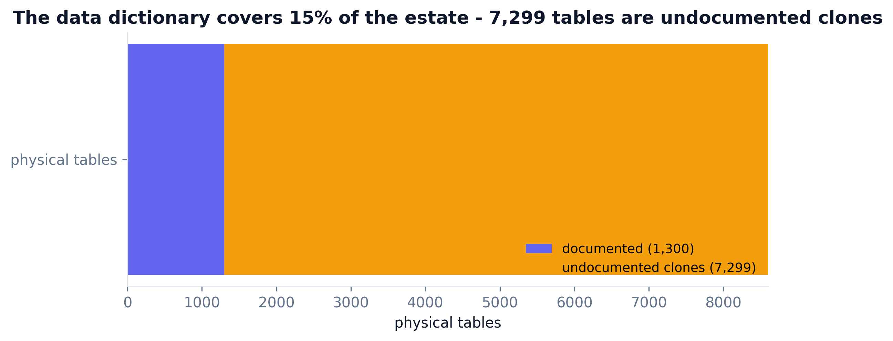
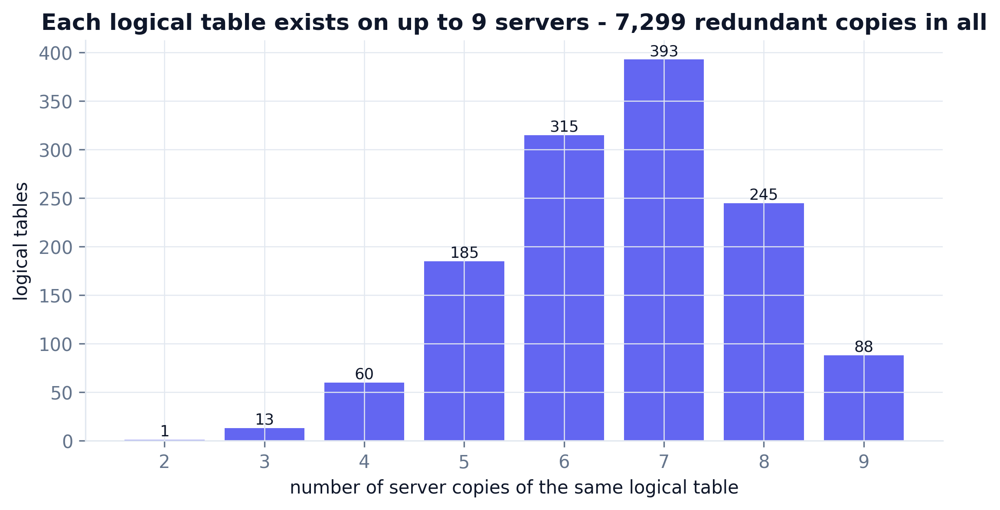
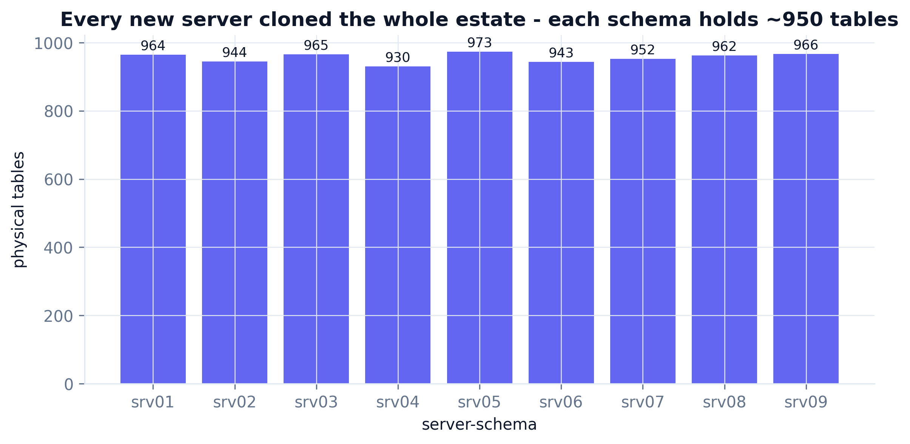
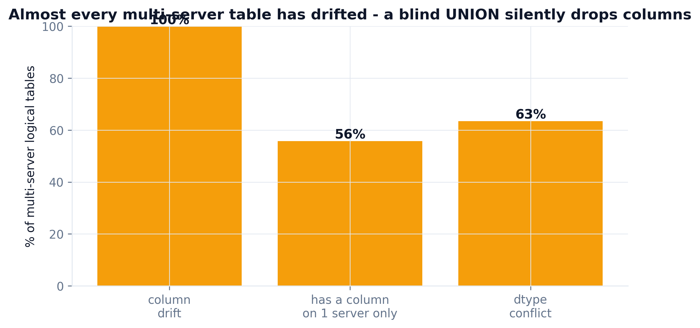
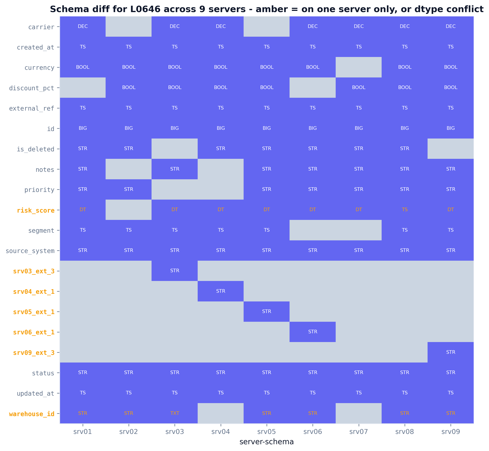
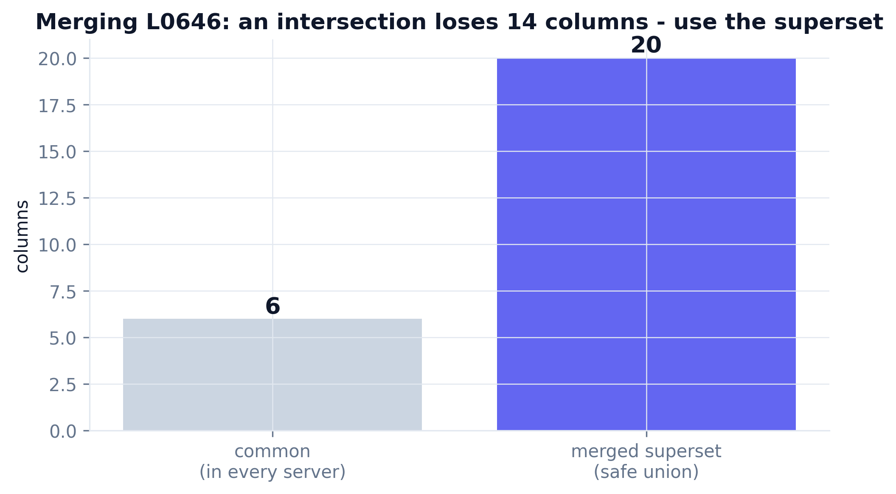

One clean star schema is the easy case. The real estate is 8,600 tables: every new server cloned the whole schema, the copies quietly drifted apart, and the data dictionary only ever covered the 1,300 logical tables. This skill audits that sprawl and does the one thing you cannot skip before merging - a column-level schema diff across all 9 servers. Real run, seed 42.
Everrest scaled by standing up a new server for each region and workload - and every server setup cloned the entire schema. Years later the same logical table exists as up to nine physical copies across nine server-schemas, and nobody documented the clones. Three inputs describe the mess.
A seeded generator builds 1,300 logical tables, replicates each across a random subset of the 9 servers (avg ~6.6 copies), and drifts every copy - dropping optional columns, adding server-unique ones, occasionally changing a dtype. The result is ~8,600 physical tables that look identical and are not.
# replicate each logical table across a random subset of 9 servers present = rng.random(N_SERVERS) < 0.735 # avg ~6.6 copies -> ~8,600 physical # drift each copy: optional columns come and go, server-unique columns appear for c in base_opt[lid]: if rng.random() < 0.85: cols.append(c) # 15% chance a column is missing here if rng.random() < 0.12: cols.append(f"{schema}_ext_{...}") # a singleton column
The goal is one governed copy of each table. The trap is that the copies are not identical, so any careless merge either drops columns or fuses incompatible types.
Cataloging at this scale is a solved problem - reuse the tools. The one piece worth writing is the schema-diff engine that turns "these look the same" into a column-by-column truth.
Auto-catalog every physical table and its columns across all 9 servers - close the documentation gap without hand-writing 8,600 entries.
Lineage + ownership so a consolidated table records which servers it merged from and who owns the result.
The reusable core (in this repo): compares a logical table across servers, finds singletons and type conflicts, emits a safe merged superset.
Fast set operations over the 91k-row column inventory - union, intersect and group across the whole estate in seconds.
Once merged, lock the superset schema as a contract so the next server clone cannot silently drift again.
One anomaly color (amber) for "drift / on one server only" across every chart and the diff matrix.
First size the problem across all 9 servers, then zoom into one table and prove exactly how its copies differ. Grab the real code below.




The step you cannot skip before merging. For logical table L0646, compare every column across the 9 servers that host it. Amber = a column that exists on only one server, or whose dtype disagrees.

The amber diagonal at the bottom is five server-unique columns - each present on exactly one server. A naive intersection would delete all of them.

CREATE TABLE l0646_merged ( server_source VARCHAR, -- lineage id BIGINT, risk_score VARCHAR, -- TYPE CONFLICT DATE/TIMESTAMP srv03_ext_3 VARCHAR, -- only 1 server srv09_ext_3 VARCHAR, -- only 1 server warehouse_id VARCHAR, -- TYPE CONFLICT TEXT/VARCHAR ... );
Merge safely. The intersection keeps 6 columns; the superset keeps all 20. The generated DDL unions every column, tags each singleton, and widens type conflicts to a safe type - nothing dropped.
| What the audit surfaced | Found by | Result | Status |
|---|---|---|---|
| Documentation gap | catalog vs dictionary | 15% covered · 7,299 undocumented | ✓ quantified |
| Clone redundancy | copies per logical table | 7,299 retireable copies | ✓ quantified |
| Column-presence drift | union vs intersection | ~100% of multi-server tables | ✓ caught |
| Singleton columns | schema_diff engine | 56% of tables have one | ✓ caught |
| Dtype conflicts | schema_diff engine | 63% of tables | ✓ caught |
| Safe merge (example L0646) | merged superset DDL | 6 common → 20 superset | ✓ merged |
A panel of five senior reviewer agents - each with 10+ years in data platform, governance and migration - reviewed the first consolidation approach. The naive plan (a UNION of the common columns) ran and looked done, but it would have quietly deleted every server-unique column. Every fix below is in the engine above.
"You cannot merge on the intersection of columns. For L0646 that keeps 6 of 20 - you would drop five columns that exist on exactly one server, and their data with them."
"15% documentation coverage means most of what you are merging is unlabeled. Catalog first, and record which servers each merged row came from."
"A UNION ALL across servers where risk_score is DATE here and TIMESTAMP there will either fail or silently coerce. You have to detect type conflicts before you write the DDL."
"Do not merge everything blindly - quantify the redundancy so leadership can approve retiring servers. 7,299 clones is the business case."
"Prove the diff is exact and repeatable - a fixed seed and a re-runnable engine, not a one-off spreadsheet."
# v1 (before): merge on columns common to every server common = set.intersection(*[cols_on(s) for s in servers]) # L0646 -> 6 columns # -> silently drops 14 columns, incl. 5 that exist on one server only # v2 (after): merge on the superset, tag singletons, widen type conflicts d = diff_table(columns, "L0646") ddl = merged_ddl(d) # -> 20 columns, nothing lost
Point it at a catalog export of your servers - it audits coverage and redundancy, then diffs any table across schemas and emits a safe merged superset.
/plugin marketplace add phoebefu6/phoebe-data-skills /plugin install how-to-schema-consolidation@phoebe-data-skills